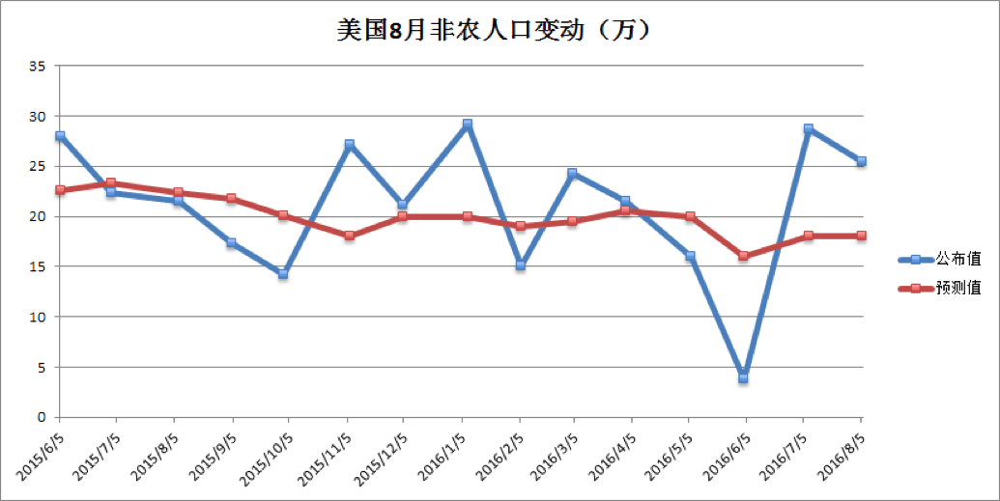
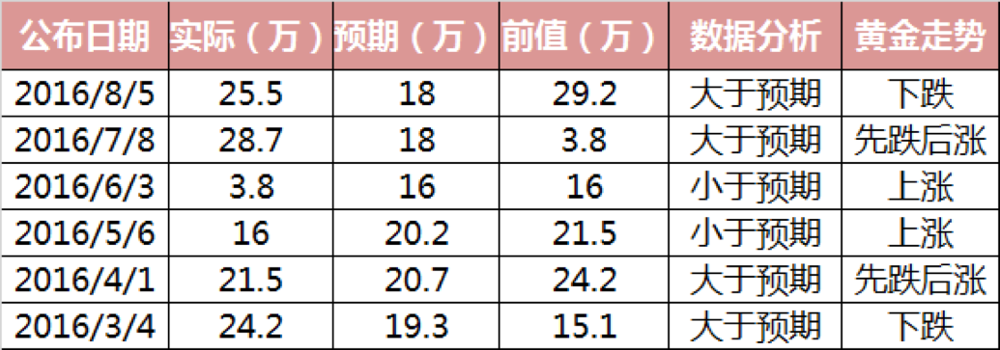

非农来临领衔超级周，操盘最佳时刻不容错过
9月2日本周五晚20:30，我们将迎来万众期盼的美国非农就业报告，料将为美联储年内加息决策提供重要指引，必将引发各大金融市场巨震。


非农就业人数5月意外恶化后，6月，7月和8月连续三个月表现靓丽，市场预期9月非农将增长18万，若实际数据超过20万，
料将为美联储加息决策提供数据支持，明显提振美元，施压非美货币和黄金，利好美元，利空金银；若实际数据表现意外不佳，料将再度引发人们对美国就业市场的忧虑，进而短线打压美元，提振非美货币和黄金，利空美元，利好金银。